Die Spiele
27 Spiele und Werkzeuge für dein ultimatives Training.
⚡🏃♂️ Agility & Reaction
🎯 Target Touch — Das Allround-Talent
🎯 Target Touch — Das Allround-Talent

Target Touch ist der vielseitigste Spielmodus im PUCK RACER System — und deckt allein schon einen Großteil dessen ab, was kommerzielle LED-Reaktionslicht-Systeme auf dem Markt bieten. Egal ob Fußball-Agility, Tennis-Beinarbeit, Hindernisparcours, Sit-ups, Planks oder Koordinationsübungen: Mit Target Touch baust du ganze Trainingseinheiten auf einem einzigen Spielmodus auf.
Das Prinzip: Pucks leuchten auf, du drückst sie — der nächste leuchtet. Klingt simpel, aber die Konfigurationsmöglichkeiten machen es endlos flexibel:
- Sequenz- oder Zufallsmodus — feste Reihenfolge oder unberechenbar
- Definierbare Anzeigepausen — von sofort bis mehrere Sekunden Verzögerung
- Mehrere Farben — unterschiedliche Aufgaben pro Farbe möglich
- Mehrere parallele Arenen — bis zu 5 Gruppen gleichzeitig trainieren
- Zeit- oder Rundenmodus — "Überlebe 60 Sekunden" oder "Schaffe 30 Wiederholungen"
- Gruppenstart — synchroner Start per Puck-Druck
Im Netz findest du hunderte Videos, die zeigen, wie man mit genau diesem Spielprinzip komplette Trainingseinheiten für Leistungssport, Schulsport oder Rehabilitation aufbauen kann. Target Touch ist dein Schweizer Taschenmesser für intelligentes Training.
Highlight: Montiere die Pucks an der Wand für Sit-ups, lege sie auf den Boden für Planks, verteile sie im Raum für Sprints — ein Spielmodus, unendliche Möglichkeiten.
🎯 Hunt! (Farbenjagd)
🎯 Hunt! (Farbenjagd)

Jage im Kreis deine eigene Farbe! Kognition, periphere Sicht und schnelle Richtungswechsel unter Zeitdruck. Die Pucks werden im Kreis um die Spieler aufgebaut. Jeder Spieler bekommt eine Farbe. Startet das Spiel, leuchtet für jeden Spieler irgendwo ein Puck auf. Drückt er ihn, leuchtet woanders ein neuer auf.
Highlight: Dynamische Warteschlangen, einstellbares Zeitlimit und eine 1-Sekunden-Warnung bevor ein Puck erlischt.
⚡ React 2-Spieler ⚡
⚡ React 2-Spieler ⚡

Das ultimative Duell! Zwei Spieler stehen sich gegenüber, zwischen Ihnen eine Reihe Pucks. Wer den Puck in seiner Farbe zuerst drückt, bekommt den Punkt. Ziel: Reaktion und kognitive Fähigkeiten verbessern.
Highlight: Konfigurierbare Farben und falsche Reize zur Verwirrung.
🏃♂️ Agilitäts T-Test
🏃♂️ Agilitäts T-Test
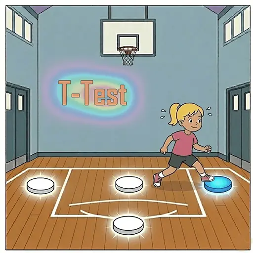
Ein weltweiter Standardtest zur Messung der Agilität. Trainiert Sprints und schnelle, multidirektionale Richtungswechsel unter Zeitdruck.
Highlight: Standard-T-Test-Layout mit optionalem "Puck Press"-Modus, der die Spieler zwingt, in die Hocke zu gehen.
🐱 Katzenreflexe
🐱 Katzenreflexe

Ein zentraler Anzeigepuck gibt vor, wann reagiert werden soll. Wer drückt seinen Puck am schnellsten? Aber Achtung vor dem Chaos-Modus und Fehlstarts!
Highlight: "Highlander"-Modus (nur der Schnellste punktet) und "Farbchaos" (nur bei Grün drücken) für fortgeschrittenes Fehlstart-Training.
⚡🎯 Catch the light Pro
⚡🎯 Catch the light Pro
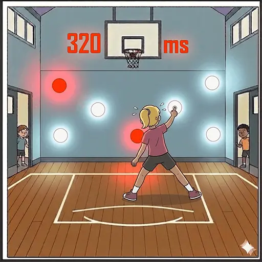
Reaktion und Peripheres Sehen wie in der Formel 1. Ein Stresstest für die Auge-Hand-Koordination. Die Pucks leuchten zufällig, kurz und überlappend auf. Triff sie, bevor sie erlöschen!
Highlight: Adaptive Geschwindigkeit, falsche Farben und eine detaillierte Reaktionszeitanalyse für jeden einzelnen Puck.
🫀 Endurance & Pacing
⏱️ Der Pacemaker
⏱️ Der Pacemaker
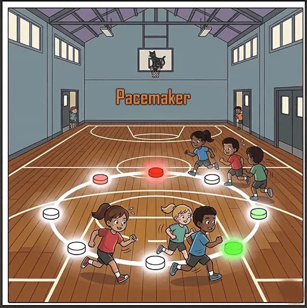
Trainiert das perfekte Pacing! Die Pucks geben als virtueller "Hase" exakt die Geschwindigkeit vor, die gelaufen werden soll. Nicht drücken, nur mitlaufen!
Highlight: Exakte Geschwindigkeit (min/km), Kreis- oder Shuttle-Modus, Live-Distanzanzeige.
🏃♂️ Luc Léger (Beep Test)
🏃♂️ Luc Léger (Beep Test)
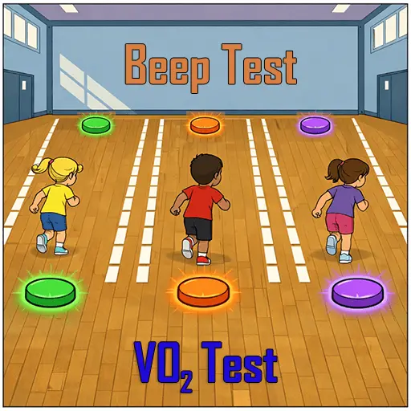
Der klassische 20m-Ausdauertest. Renne im Rhythmus der Signale. Das Tempo steigert sich minütlich. Bist du zu früh oder zu spät, gibt es eine Gelbe Karte. Bei der zweiten fliegst du raus!
Highlight: Offizielle VO₂max-Tabellen, Fehlstart-Erkennung.
🏃♂️ Pendellauf
🏃♂️ Pendellauf

Klassischer Ausdauer-Test. Laufe zwischen Start und Ziel hin und her. Start: Pucks gedrückt halten bis zum GO Signal!
Highlight: Sieger-Erkennung und Fehlstart-Erkennung aktiv.
🧟 Zombie Escape
🧟 Zombie Escape

Wiederholende Sprints mit ständig verkürzter Zeit. Wer es nicht schafft, wird vom Zombie gebissen und ist raus!
Highlight: Automatische Zeitreduktion, Sudden-Death-Modus.
🏎️ Pitstop
🏎️ Pitstop
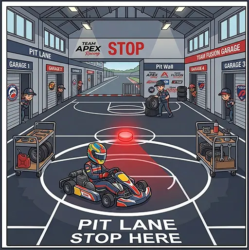
Eine Pause einlegen. Dieses Spiel simuliert Boxenstopps in einem Rennen, bei denen die Spieler definierte Pausen einlegen müssen.
Highlight: Pitlane-Modus für strukturierte Pausen.
🧠🤪 Cognition & Fun
🔴 Simon Says
🔴 Simon Says

Merk dir das Farbmuster! Der Computer zeigt es, du machst es nach. Rot blinkt -> Drücke Rot. 2. Runde: Rot, Blau blinkt -> Drücke Rot, Blau...
Highlight: Einstellbare Geschwindigkeit, Farb-Palette für Farbenblinde.
🏃♂️ Simon Runs
🏃♂️ Simon Runs
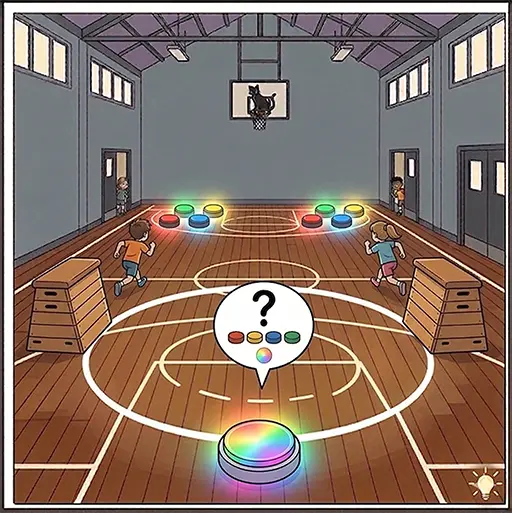
Merk dir das Farbmuster! Renn zu den Pucks und drücke sie. Simon says, aber mit Schwitzen!
Highlight: Zentraler Anzeigemodus und Disqualifikations-Management.
💣 Bomb Squad
💣 Bomb Squad

Tick... Tack... Kannst du die Zeit einschätzen? Entschärfe die Bombe im richtigen Moment! Drücke genau nach Ablauf der Zeit. Grün = Entschärft, Rot = BOOM.
Highlight: Einstellbare Toleranz, Gruppen-Synchronisationsmodus, Explosions-Feedback.
🚦 Ochs am Berg
🚦 Ochs am Berg

Der Klassiker! Die Pucks zeigen an: Laufen (Grün) oder Stehen (Rot). Wer bei Grün ankommt und drückt, kriegt einen Punkt. Wer bei Rot drückt, wird bestraft.
Highlight: Gnadenfrist-Einstellung und manuelle Übersteuerung durch den Trainer.
🧠 Memory Sprint
🧠 Memory Sprint

Gehirnjogging! Trainiert das räumliche Arbeitsgedächtnis unter körperlicher Belastung. Finde und drücke die passenden Farbpärchen! Verteile die Pucks z.B. hinter einem Hindernisparcour
Highlight: "Blind Search"-Modus, automatischer Neustart und Live-Fehlerverfolgung.
⚔️ Domination
⚔️ Domination

Intensives Ausdauerspiel. Zwei Teams kämpfen um die Vorherrschaft auf dem Spielfeld. Erobert Pucks durch Klicken und klaut sie dem Gegner!
Highlight: Deathmatch Mode. Unterstützung für zwei Arenen.
❌⭕ Tactical TicTacToe
❌⭕ Tactical TicTacToe
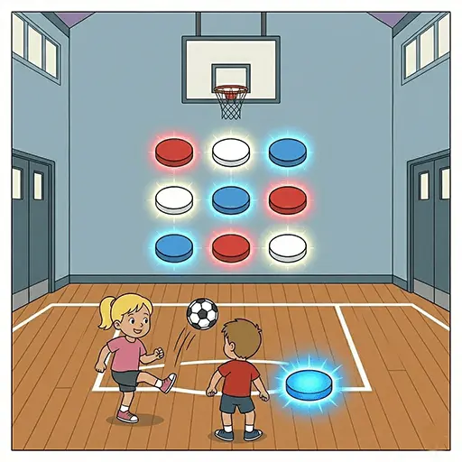
Präzision trifft Taktik! Klassisches TicTacToe, aber die Felder müssen mit Bällen abgeworfen werden. Wer zuerst eine 3er-Reihe hat, gewinnt!
Highlight: Hard-Modus, das Gitter passt sich automatisch an die Puck-Anzahl an.
🪑 Reise nach Jerusalem
🪑 Reise nach Jerusalem

Action, Spaß und Reaktionsschnelligkeit! Der Party-Klassiker für die Sporthalle. Wenn die Musik stoppt, sprinte zu einem freien Puck!. Kann zum beispiel mit Ball prellen kombiniert werden.
Highlight: Eigene MP3s hochladen, dynamische Runden-Eliminierung.
🛠️ Measurement Tools & Utilities
🎩 Der Sprechende Hut
🎩 Der Sprechende Hut

"Nicht Slytherin..." – Dieses Tool teilt eine große Menge Spieler absolut fair und zufällig in gleich große Gruppen ein.
Highlight: Garantierte ausbalancierte Zuweisung, Live-Neuausgleich bei Abbruch.
⏱️ Stoppuhr
⏱️ Stoppuhr
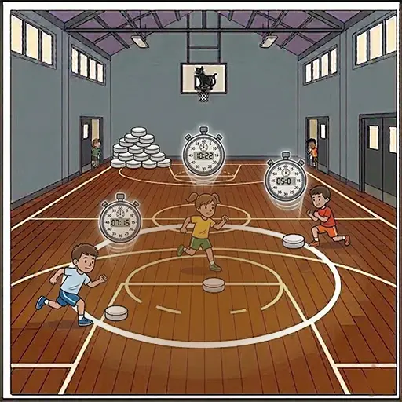
Eine einfache Stoppuhr. Jeder Puck agiert als eigene Stoppuhr. Der Trainer kann alle gleichzeitig starten.
Highlight: Rundenzeiten, zentraler oder individueller Start, "Hold-to-Start" mit Countdown.
⏳ Einfacher Timer
⏳ Einfacher Timer
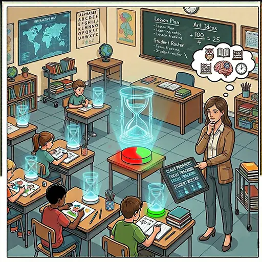
Ein praktisches Werkzeug für den Unterricht. Jeder Puck dient als persönliche Countdown-Eieruhr für einen Schüler. Übe in der Grundschule 2-3-4 Minuten ruhig zu arbeiten.
Highlight: Visueller Countdown-Fülleffekt, Zeit pro Schüler anpassen (+/-).
🔢 Einfacher Zähler
🔢 Einfacher Zähler
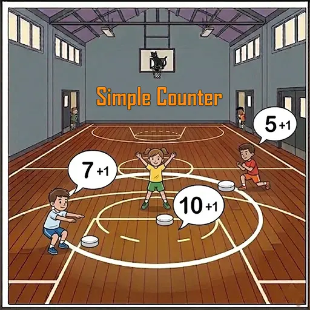
Zählt einfach, wie oft ein Spieler seinen Puck drückt. Ideal für Übungen auf Zeit (z.B. Wer schafft die meisten Wiederholungen in 3 Minuten?).
Highlight: Tap-to-count, Zeitlimit.
⬇️ Countdown
⬇️ Countdown
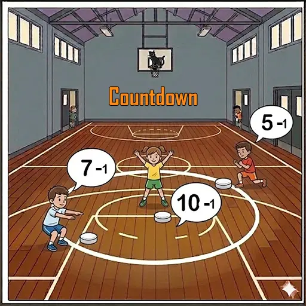
Starte mit einer Zahl und zähle runter auf Null. Wer schafft zuerst 30 Liegestütze (jedes Mal drücken)?
Highlight: Visualisierung über LED-Ring, Option: Spiel stoppt beim ersten Gewinner.
🥵 Zirkeltraining
🥵 Zirkeltraining

Ein visuelles und akustisches Steuerungssystem für das Gruppentraining (z.B. Zirkeltraining). Nimmt dem Trainer die Stoppuhr ab und gibt ihm die zeit die Übungen zu verbessern.
Highlight: Synchronisierte Fortschrittsbalken, Arbeits-/Ruhephasen, konfigurierbarer Ton.
▶️ Display Modus
▶️ Display Modus
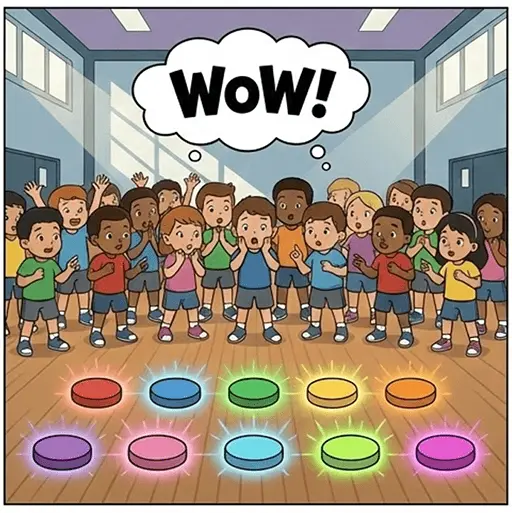
Ein Werkzeug für Technik-Fans. Steuert alle Pucks manuell an, zeigt Effekte, Verbindungsqualität, Akkustand, Software-Version und mehr an.
Highlight: Manuelle/synchronisierte/zufällige Lichtsteuerung für Events.
👥 Player & Training Manager
👥 Spieler Verwaltung
👥 Spieler Verwaltung
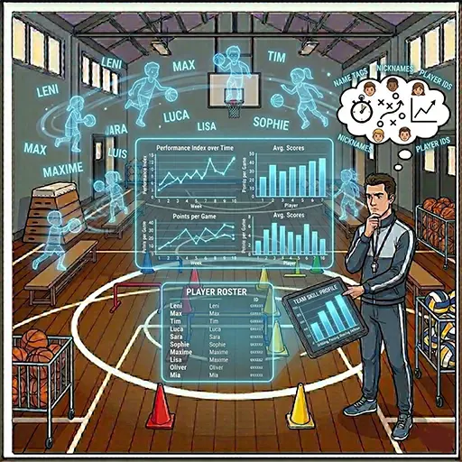
Zentrale Spieler- und Gruppenverwaltung. Erstelle Gruppen (z.B. Klassen, Teams) und pflege Spielerlisten. Diese Listen stehen in allen Spielen zur Verfügung, um Namen schnell zuzuordnen.
Highlight: Massenimport aus CSV, TXT oder Zwischenablage.
📋 Trainingsplaner
📋 Trainingsplaner
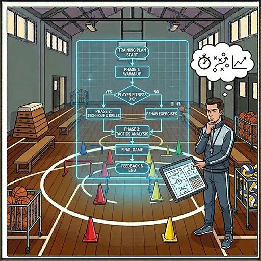
Plane und bereite komplette Trainingseinheiten im Voraus vor. Verkette mehrere Spiele, speichere individuelle Einstellungen pro Spiel und führe die Einheit Schritt für Schritt aus, ohne Gefummel während des Unterrichts.
Highlight: Backup/Import von Trainings als JSON-Dateien zum Teilen mit Kollegen.